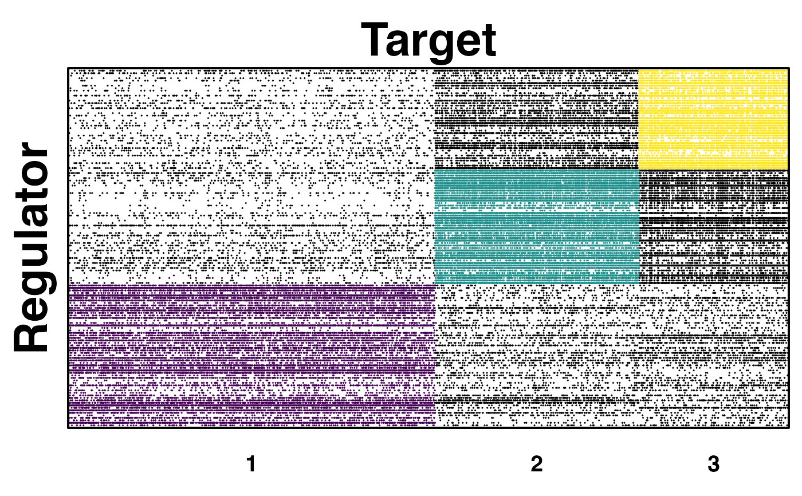
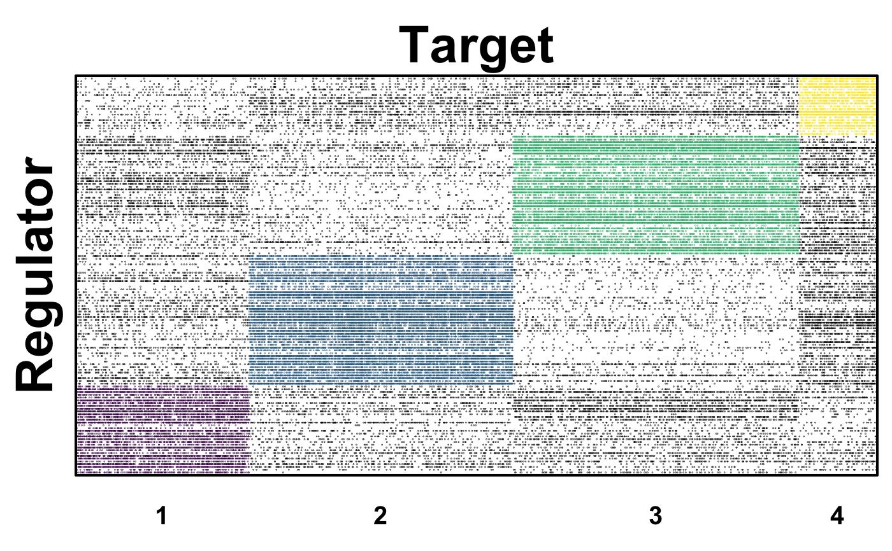

panda.to.condor.object.RdCONDOR (COmplex Network Description Of Regulators) implements methods for clustering biapartite networks and estimatiing the contribution of each node to its community's modularity, [(Platig et al. 2016)]) This function uses the result of PANDA algorithm as the input dataset to run CONDOR algorithm. More about condor package and usage.
panda.to.condor.object(panda.net, threshold)
| panda.net | Data Frame indicating the result of PANDA regulatory network, created by |
|---|---|
| threshold | Numeric vector of the customered threshold to select edges. Default value is the the midpoint between
the median edge-weight of prior ( 3rd column "Motif" is 1.0) edges
and the median edge-weight of non-prior edges (3rd column "Motif" is 0.0) in PANDA network, see |
a CONDOR object, see create.condor.object.
# refer to four input datasets files in inst/extdat treated_expression_file_path <- system.file("extdata", "expr4_matched.txt", package = "netZooR", mustWork = TRUE) control_expression_file_path <- system.file("extdata", "expr10_matched.txt", package = "netZooR", mustWork = TRUE) motif_file_path <- system.file("extdata", "chip_matched.txt", package = "netZooR", mustWork = TRUE) ppi_file_path <- system.file("extdata", "ppi_matched.txt", package = "netZooR", mustWork = TRUE) # Run PANDA for treated and control network treated_all_panda_result <- panda(e = treated_expression_file_path, m = motif_file_path, ppi = ppi_file_path, rm_missing = TRUE )#>#>control_all_panda_result <- panda(e = control_expression_file_path, m = motif_file_path, ppi = ppi_file_path, rm_missing = TRUE )#>#># access PANDA regulatory network treated_net <- treated_all_panda_result$panda control_net <- control_all_panda_result$panda # Run CONDOR treated_condor_object <- panda.to.condor.object(treated_net, threshold = 0)#> [1] "modularity of projected graph 0.306134881290028" #> [1] "Q = 0.306345744728624" #> [1] "Q = 0.306345744728624"control_condor_object <- panda.to.condor.object(control_net, threshold = 0)#> [1] "modularity of projected graph 0.312436970579959" #> [1] "Q = 0.312458762118235" #> [1] "Q = 0.312761082005331" #> [1] "Q = 0.312761082005331"# plot communities # package igraph and package viridisLite are already loaded with this package. treated_color_num <- max(treated_condor_object$red.memb$com) treated_color <- viridis(treated_color_num, alpha = 1, begin = 0, end = 1, direction = 1, option = "D") condor.plot.communities(treated_condor_object, color_list=treated_color, point.size=0.04, xlab="Target", ylab="Regulator")control_color_num <- max(control_condor_object$red.memb$com) control_color <- viridis(control_color_num, alpha = 1, begin = 0, end = 1, direction = 1, option = "D") condor.plot.communities(control_condor_object, color_list=control_color , point.size=0.04, xlab="Target", ylab="Regulator")